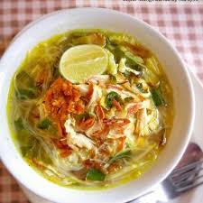

Beranda
Soto Ayam

Deskripsi
Soto ayam adalah sup tradisional Indonesia berkuah kuning bening
yang gurih, kaya rempah (kunyit, serai, daun jeruk), dan disajikan
dengan suwiran ayam, soun, tauge, serta taburan bawang goreng.
Hidangan ini populer karena kesegarannya, sering dinikmati dengan
nasi/lontong, sambal, jeruk nipis, dan seringkali koya.
Bahan yang dibutuhkan:
-
Ayam: 500 gr ayam kampung/negeri (bisa dada/paha), rebus dan
suwir.
-
Bumbu Halus: 5-10 siung bawang merah, 4-5 siung bawang putih, 3
butir kemiri (sangrai), 2 ruas kunyit, 1 ruas jahe, 1/2 sdt
ketumbar, merica bubuk secukupnya.
-
Aromatik: 2-4 lembar daun salam, 4 lembar daun jeruk, 2 batang
serai (geprek), lengkuas (geprek).
-
Kuah: 1.5 - 2 liter air, garam, gula, dan kaldu bubuk
secukupnya.
-
Pelengkap: Soun (seduh), tauge (rebus), irisan kol, telur rebus,
seledri, bawang goreng, sambal, dan jeruk nipis.
Langkah-langkah pembuatan:
-
Rebus Ayam: Rebus ayam dengan air hingga mendidih. Buang kotoran
yang mengapung agar kuah bening. Masak hingga ayam empuk. Angkat
ayam, tiriskan, lalu goreng sebentar dan suwir-suwir.
-
Tumis Bumbu: Tumis bumbu halus bersama daun salam, daun jeruk,
serai, dan lengkuas hingga harum, matang, dan tidak langu.
-
Masak Kuah: Masukkan tumisan bumbu ke dalam air rebusan ayam.
Tambahkan garam, gula, dan kaldu bubuk. Koreksi rasa, masak
dengan api kecil hingga bumbu meresap.
-
Penyajian: Tata soun, tauge, kol, dan suwiran ayam dalam
mangkuk. Siram dengan kuah panas. Beri taburan seledri, bawang
goreng, telur, dan perasan jeruk nipis.
Tips
Gunakan ayam kampung untuk kaldu yang lebih gurih. Menumis bumbu
hingga benar-benar matang (tanak) adalah kunci kuah soto yang wangi
dan lezat.